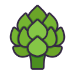
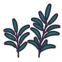
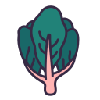
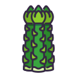

Our Services
Footsteps provides a variety of programmes and services that support leadership development, volunteer engagement and sustainable community growth. Use the search bar below to quickly find a service that interests you.
Search Services

Strategic Planning
We help organisations and communities create sustainable long-term plans that support growth, development and positive change.

Systemic Change
Our systemic change initiatives address long-term challenges by promoting collaboration, innovation and community-driven solutions.

Community Resources
We provide educational materials, support tools and practical resources that help communities achieve meaningful outcomes.

Leadership Development
Our leadership programmes equip individuals with the knowledge, confidence and skills needed to become positive community leaders.
Volunteer Opportunities
Volunteers are connected with impactful projects where they can develop skills while supporting meaningful community initiatives.
Sponsorship Programmes
We partner with organisations and individuals who want to support community-driven programmes and sustainable development projects.
Why Choose Footsteps?
- Experienced leadership and development support
- Community-centred programmes
- Volunteer engagement opportunities
- Strategic planning expertise
- Collaborative partnerships
- Sustainable development solutions
Get Started Today
Interested in one of our services? Submit an enquiry and a Footsteps representative will contact you with additional information and available opportunities.
Submit an Enquiry